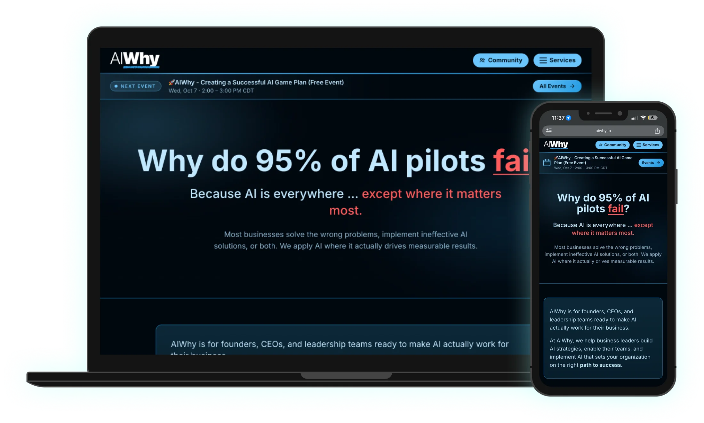
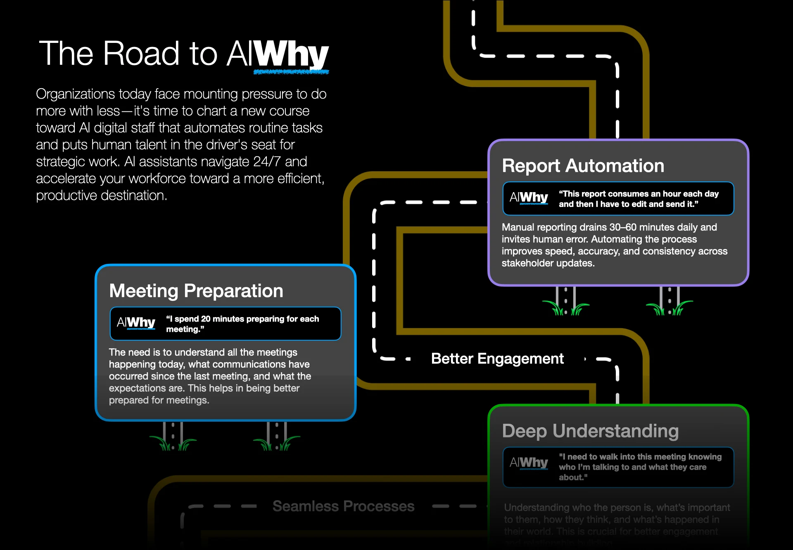
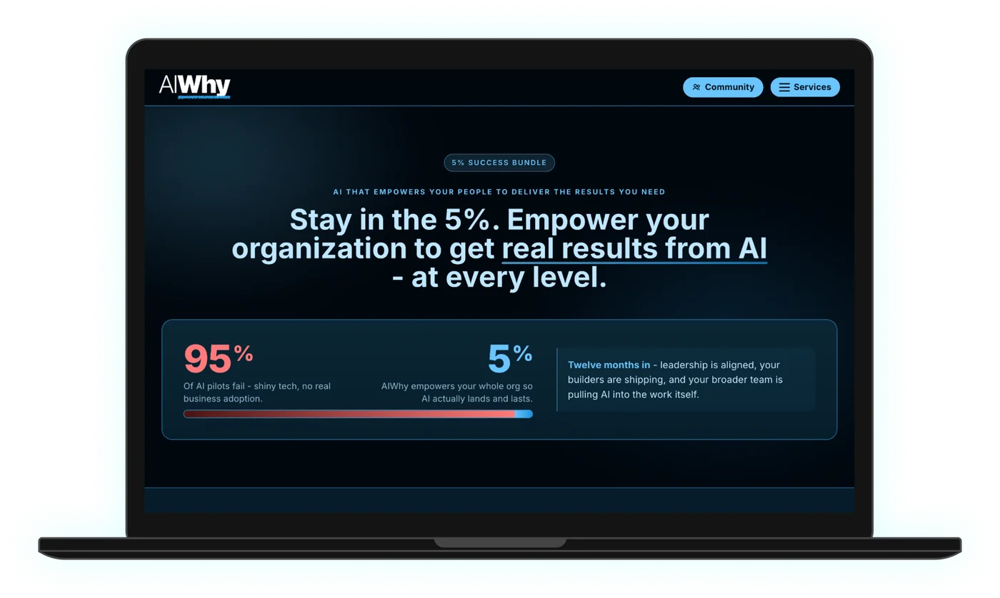
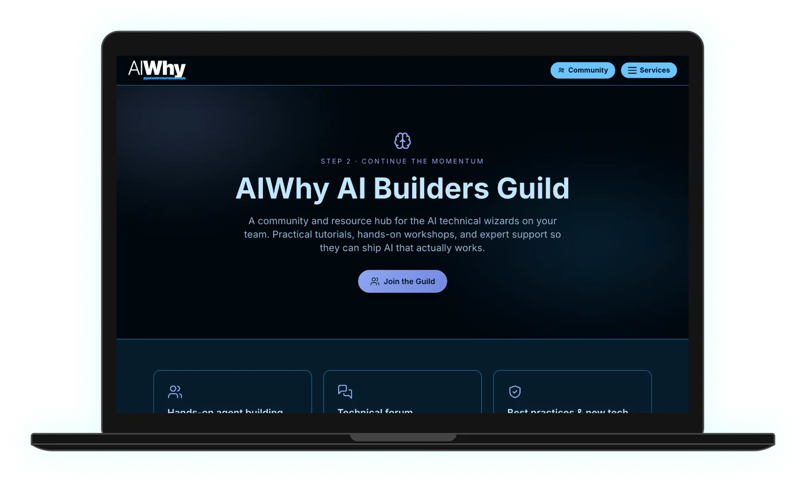
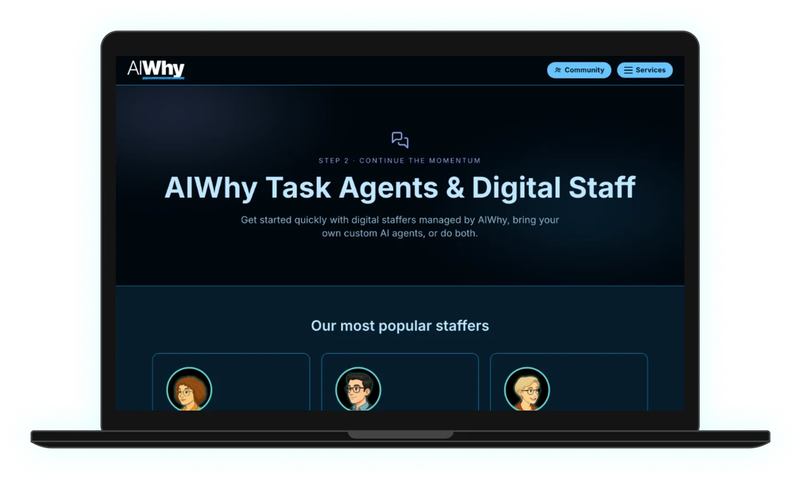
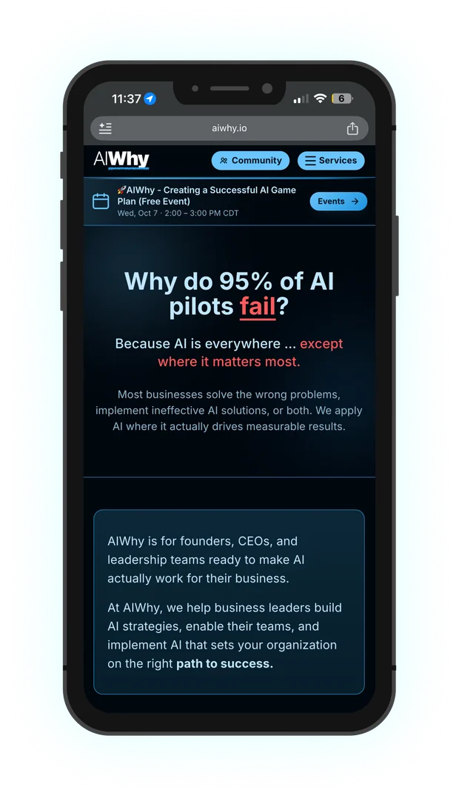
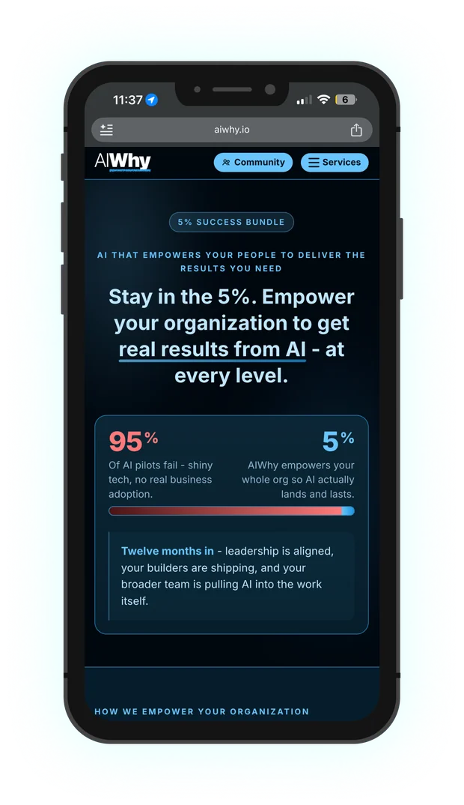
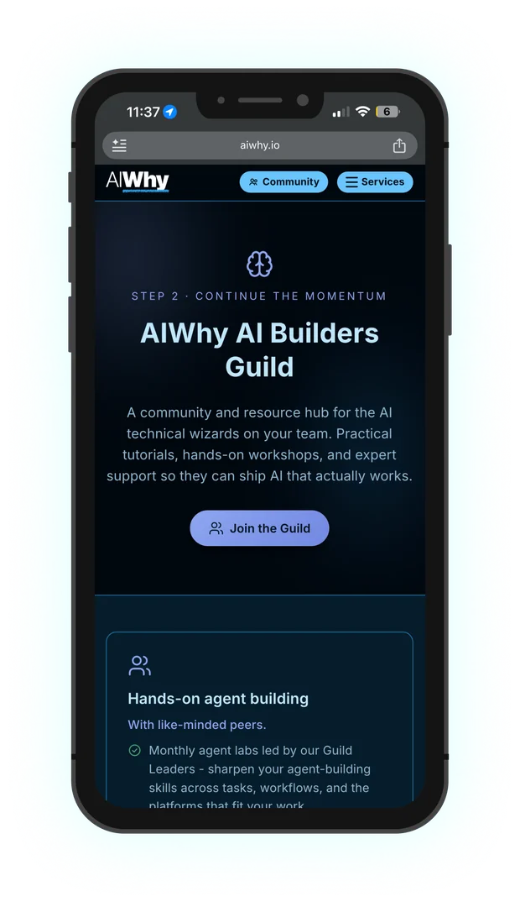
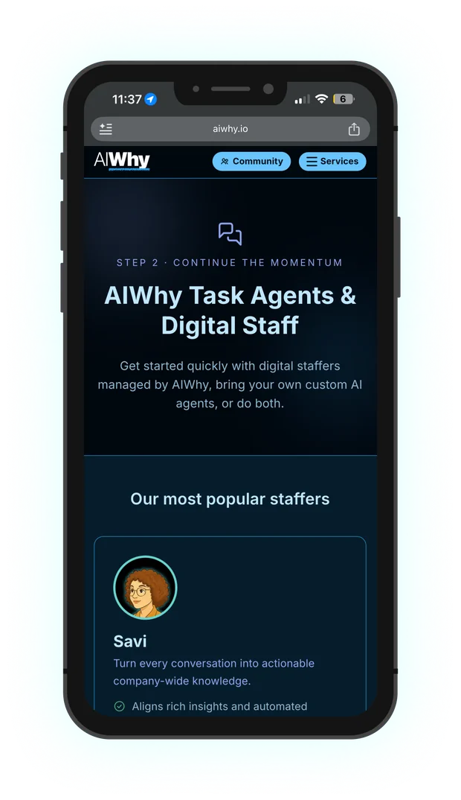
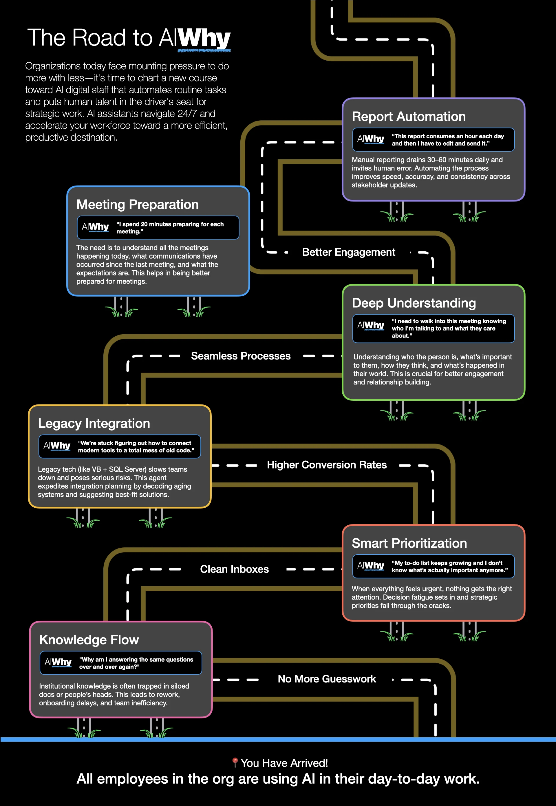

Building the AIWhy.io brand, and three sites in three weeks.
AIWhy.io is Lextech’s external site for its AI agent services. I created the brand system (everything except the logo) and designed the site through three rebuilds. I then carried the brand into slide decks, PDFs, workshop pages and proposal templates.
Launch a credible brand and site for a new AI services offering, fast, and make sure the site could be found by the AI tools it was about.
Color, type, visual language and site design, plus decks, PDFs, workshop promo pages and BetterProposals templates for statements of work.
The site is live, and the team has helped roughly 30 clients with AI adoption using the materials built on this brand.

The brand system
The AIWhy logo already existed. I built everything around it: a dark, high-contrast base, bold headings, bright accent colors for each topic, and callouts written in the client’s own words.

Three versions in three weeks
Each version took about a week. The first two had the same problem: they were built as JavaScript apps that search engines and AI assistants couldn’t read well. For a company selling AI services, being invisible to AI search wasn’t an option.
Lovable
Built in about a week, but as a React app that AI search couldn’t read.
Circle
Rebuilt in Circle, and ran into the same readability problem.
Built with Claude
The version that launched and is still live: plain HTML that search engines and AI tools can read, plus Markdown versions of key pages written for AI answer engines.
The live site







Beyond the website
The brand had to work everywhere the team met clients: slide decks, PDFs, promotional pages for AI workshops, and the statement-of-work templates I set up in BetterProposals.
“The Road to AIWhy” flyer
A one-page flyer that turns a list of services into a journey. Each stop along the road is a common client problem, such as “I spend 20 minutes preparing for each meeting,” paired with what an AI agent can take off their plate. It ends at the goal: every employee using AI in their day-to-day work.
The same cards, colors and client-voice quotes carry over into the slide decks, so a client sees one consistent story from the first handout to the proposal.

Decisions that mattered
Rebuild quickly instead of patching
When a version didn’t meet the bar, we moved on after about a week instead of spending months working around its limits. The brand stayed the same across all three, which is what made switching fast.
Design for AI readers, not just people
An AI services site that AI assistants can’t read undercuts its own pitch. That’s why the final site is plain HTML generated with Claude, with added Markdown files that give AI answer engines a clean version of each page (answer engine optimization, or AEO).
One system for every touchpoint
Decks, PDFs, workshop pages and proposals all use the same colors, type and layout patterns, so a client sees one consistent company from first visit to signed SOW.
Launching an AI product that needs a real brand? Let’s talk.
I love talking about design and hard problems. Drop me a line or connect on LinkedIn. I'd love to hear from you.